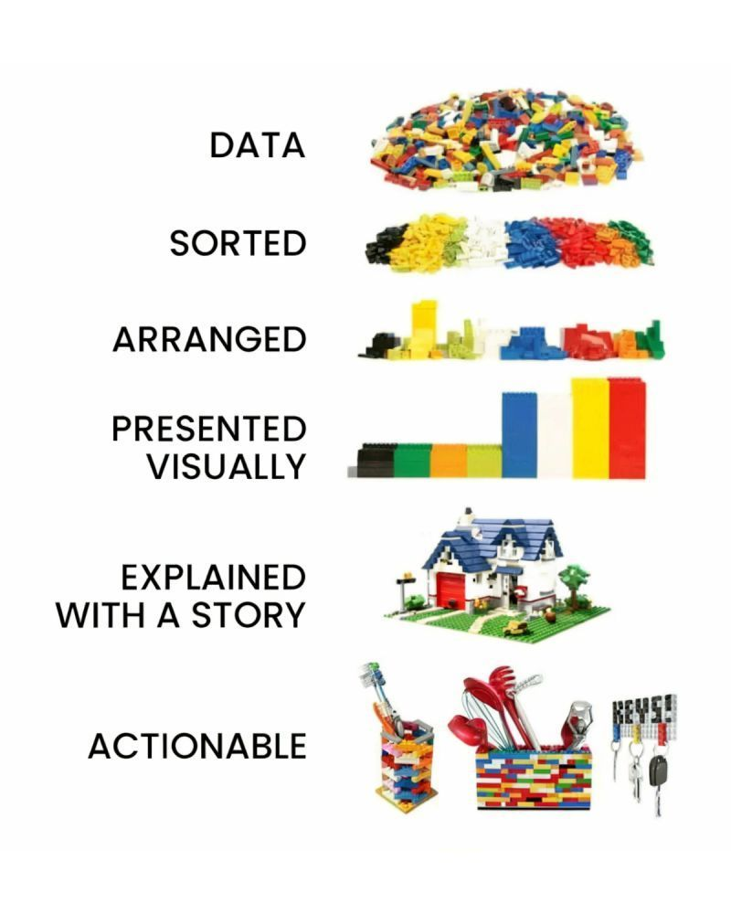
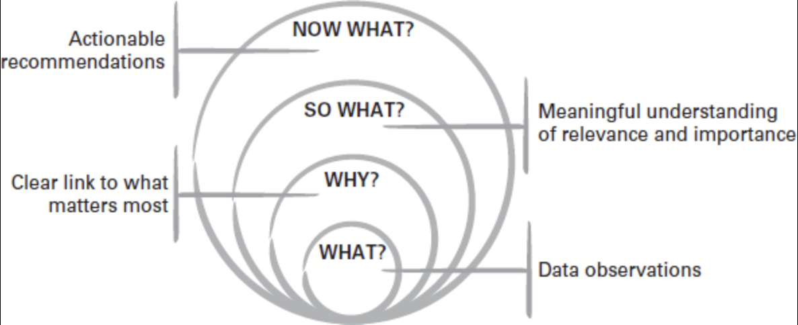
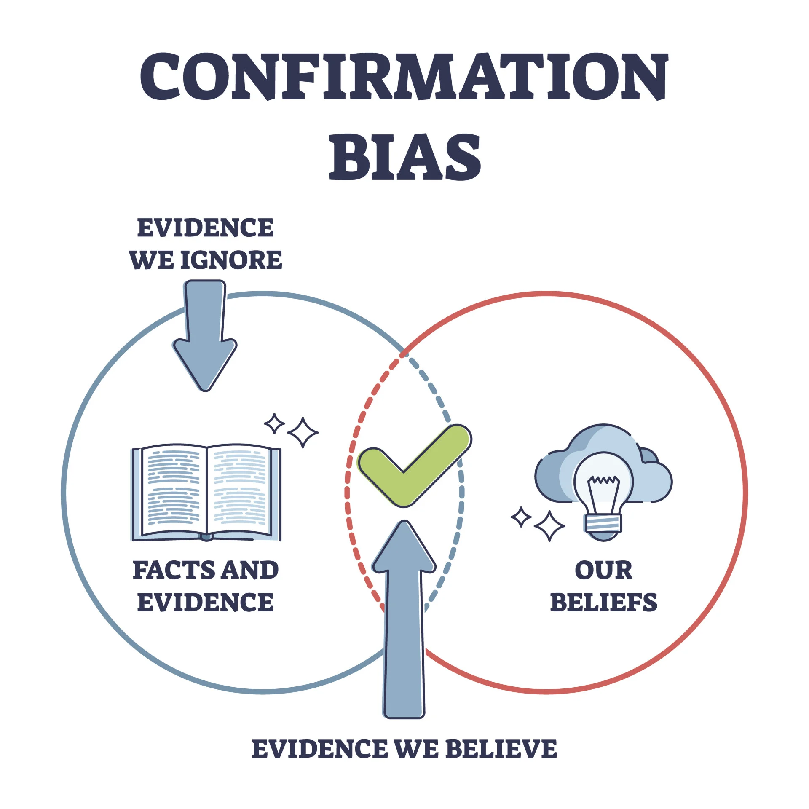
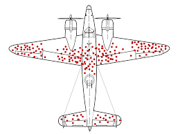

flowchart LR
A[Capture / Collection] --> B[Storage / Management]
B --> C[Processing / Transformation]
C --> D[Analysis / Modeling]
D --> E[Communication / Decision]
classDef stage fill:#f4f4f4,stroke:#555,stroke-width:1px,color:#000,font-weight:bold;
class A,B,C,D,E stage;
subgraph Roles [Key Roles]
DE[Data Engineer]
AE[Analytics Engineer]
DA[Data Analyst]
DS[Data Scientist]
BM[Business Manager]
end
DE -. supports .-> A
DE -. builds pipelines .-> B
AE -. transforms data .-> C
DA -. explores data .-> D
DS -. models data .-> D
BM -. acts on insight .-> E
style Roles fill:#f9f9f9,stroke:#ccc,stroke-width:1px,color:#333;
Data Analyst
Statistical Thinking
Karen Hovhannisyan
2025-11-30
Overview
This chapter introduces the foundations of data analytics and statistical thinking.
Students explore how data becomes insight, what types of analytics exist, and how organizations move through the data lifecycle—from collection to decision-making.
By the end of the class, you should be able to describe what data analytics is, recognize the main forms of analytics, and identify how data-related roles interact within a company.
What Is Data Analytics?
Data analytics is the practice of examining data systematically to discover useful information, reach conclusions, and support decision-making.
In practice, it bridges raw data and business strategy. The process typically follows five stages:
- Data Generation – transactions, sensors, user interactions, or surveys produce raw data.
- Collection and Storage – data is gathered and kept in databases, data warehouses, or cloud systems.
- Processing and Integration – data is cleaned, formatted, and connected across sources.
- Analysis and Modeling – statistical or machine-learning methods reveal patterns and predict outcomes.
- Communication and Action – visualizations, dashboards, and reports communicate insights for business decisions.
This “data-to-insight” flow is iterative; every analysis generates new questions that feed the next cycle.
Business Applications of Data Analytics
Analytics supports decision-making across many domains:
- Telecommunications: predicting churn, optimizing network performance, or tailoring offers.
- Retail: analyzing baskets, forecasting demand, or optimizing pricing.
- Finance: assessing credit risk or detecting fraud.
- Marketing: evaluating campaign effectiveness and designing experiments (A/B tests).
- Healthcare: identifying risk factors or optimizing treatment outcomes.
The unifying theme is that analytics translates data into value by informing actions.
Types of Analytics
Different analytical approaches answer different questions.
| Type | Central Question | Typical Methods | Example |
|---|---|---|---|
| Descriptive | What happened? | Aggregation, visualization | Monthly sales by region |
| Diagnostic | Why did it happen? | Correlation, segmentation | Analyzing the effect of pricing on sales |
| Predictive | What might happen? | Regression, classification, forecasting | Predicting churn probability |
| Prescriptive | What should we do? | Optimization, simulation | Recommending personalized offers |
Explanation with Lego
The Data Lifecycle
The data lifecycle describes how information moves through an organization and is transformed into insight.
- Capture / Collection: raw data is obtained from transactional systems, sensors, APIs, or external datasets.
- Storage / Management: engineers design and maintain databases, warehouses, or data lakes to store data efficiently and securely.
- Processing / Transformation: data is cleaned, structured, and enriched to prepare it for analysis.
- Analysis / Modeling: analytical teams explore data, test hypotheses, and build models that explain or predict outcomes.
- Communication / Decision: results are shared through dashboards, visualizations, and reports to support business actions.
Professional Roles
| Role | Primary Responsibilities |
|---|---|
| Data Engineer | Builds and maintains the data infrastructure, pipelines, and integrations that collect and store raw data. |
| Analytics Engineer | Bridges engineering and analysis by transforming raw data into clean, documented, and reusable datasets—often using SQL, dbt, and data-modeling best practices. Ensures analysts and data scientists can work efficiently with trustworthy, well-structured data. |
| Data Analyst | Explores datasets, performs aggregations, builds dashboards, and answers business questions through descriptive and diagnostic analysis. |
| Business Analyst | The business analyst plays a similar role to the data analyst while bringing domain-specific knowledge to their work. A financial analyst, for example, is a type of business analyst who specializes in working with data from the finance industry. |
| Data Scientist | Applies statistical and machine-learning techniques to uncover patterns, generate predictions, and perform experimentation. |
| Business Stakeholder / Manager | Interprets and acts on insights, ensuring that data-driven decisions translate into measurable outcomes. |
Flow
Reflection and Discussion
Types of data used commonly
Definition of data
Data is used in its broadest sense: observations, measurements and facts (both quantitative and qualitative) that serve as information or evidence.
Zero-party data
Data intentionally or proactively shared by audiences, such as:
- Responses to polls, surveys or quizzes
- Profiling details added to online accounts or loyalty programmes
First-party data
Proprietary data collected directly (with consent) via a company’s own channels. It typically captures behaviours and is a key marketing asset. Common sources include:
- Digital interactions (website, apps)
- Customer Relationship Management (CRM) systems
- Content engagement
- Point-of-sale systems
- Transactions (accounting systems)
- Interactions with digital support and call centres
First-party data | Examples
Examples of first-party data products:
- Sales performance metrics by region/country/category
- CRM extracts: contact info, purchase and interaction history for segmentation/personalization
- Loyalty/payment card purchase data showing behavioural patterns
- Email marketing metrics: open rate, click-through rate, subscriber behaviour
Second-party data
Data not collected by the business itself but associated with its customers/audiences and obtained via a partnership or contractual agreement. Examples:
- Retail purchase data
- Market research and survey data
- Channel partner/supplier data treated as first-party within that relationship
Typical second-party sources in business:
- In-store shopper research
- Panels/retail share data (e.g., Kantar/Nielsen/IRI/Mintel)
- Brand and communications tracking studies; ad testing; in-depth interviews
- Web scraping (owned sites) and forums for sentiment, reviews, and competitive intelligence
Third-party data
Data collected by another entity that doesn’t have a direct link to your customers/audiences, often aggregated and licensed for use. (Note: privacy regulations like GDPR have tightened access and usage.)
Trusted third-party examples:
- Social platforms’ aggregated audience and behaviour insights
- External website analytics (e.g., Google Analytics) offering traffic, conversion, and interaction insights
- Vendors (e.g., Experian/Acxiom/Dun & Bradstreet) providing profiles, segmentation, and targeting datasets
- Open/public data (e.g., census aggregates)
Definition of insight
An actionable insight connects observations to what matters and what to do next:
- What? — the observations from the data
- Why? — why it matters
- So what? — relevance and relative importance
- Now what? — the recommended action
Definition of insight| What? Why? So what? Now what?
Key reminders:
- A data point isn’t useful unless it links to why it matters.
- It isn’t insightful unless it answers so what (why it’s relevant/important).
- It isn’t actionable unless it leads to a feasible now what recommendation.
Data Reporting vs Data Story
Reporting focuses on standardized, repeatable outputs that explain the data point itself. Storytelling focuses on synthesizing evidence, reducing noise, and surfacing meaning and judgement to drive decisions and action. Visualization helps, but visualization alone is not a story.
| Dimension | Data reporting | Data storytelling |
|---|---|---|
| Primary focus | Communicates the data | Communicates the insight and recommendations |
| Approach | Standardized | Customized to the situation and audience |
| Audience effort | Requires a data-literate audience | Does the hard work for the audience |
| Core skills | Good data visualization skills | Strong critical thinking and creative communication |
Definition of storytelling
Storytelling is the creation and telling of stories. In business settings, it is a form of communication that adapts structures from wider storytelling to persuade audiences to think, feel and act.
Data storytelling applies storytelling techniques to communicate insights, actions and ideas that come from data (rather than the raw data alone). It starts by understanding the data available within the broader goals, then draws out meaning from the background noise to guide the right conversations and decisions.
Bias in Data
Types of Bias in Data
Understanding bias is crucial in data analytics, as it affects the reliability and fairness of insights and models.
Below are the main types of bias with examples and ways to avoid them.
Selection Bias
Happens when certain groups are systematically excluded or included due to how data is selected.
Example:
A marketing campaign’s success is evaluated only on customers who opened emails, ignoring those who didn’t → engagement appears artificially high.
How to avoid:
- Randomize inclusion criteria; avoid convenience filtering (e.g., “openers only”).
- Compare included vs. excluded groups; use propensity scores or re-weighting.
- Expand recruitment channels and reduce barriers to inclusion.
Sampling Bias

Measurement (Instrumentation) Bias
Arises from inaccurate tools or methods used to collect data.
Example:
A survey app records 0 when users skip a question instead of missing, misleading analysts to think respondents selected zero.
How to avoid:
- Standardize definitions and validation rules; treat missing explicitly.
- Calibrate and test instruments; run overlap/parallel periods when switching tools.
- Include data-quality checks (range, type, logic) in ETL.
Recall Bias
Occurs when participants don’t accurately remember past events.
Example:
When asked how many times they visited a store last month, respondents under/over-report due to memory errors.
How to avoid:
- Shorten recall windows; use diaries or passive behavioral data where possible.
- Ask concrete, bounded questions (“in the last 7 days”).
- Provide anchors/examples to improve recall.
Observer (Experimenter) Bias
A researcher’s expectations influence data collection or interpretation.
Example:
An analyst expecting a new ad to perform better focuses on positive feedback and downplays negatives.
How to avoid:
- Blind analysts to treatment where feasible; pre-register analysis plans.
- Use objective scoring rubrics and inter-rater reliability checks.
- Automate extraction/labeling where appropriate.
Response Bias
Participants give socially desirable or expected answers rather than truthful ones.
Example:
In a satisfaction survey, customers rate service higher to appear polite.
How to avoid:
- Use neutral wording and anonymity; avoid leading questions.
- Prefer behavioral measures over attitudinal when possible.
- Include validity checks (e.g., reverse-coded items).
Confirmation Bias
Tendency to favor data that confirms existing beliefs or hypotheses.
Survivorship Bias
Focusing only on successful cases while ignoring failures.
Historical Bias
Outdated or biased historical data perpetuates inequalities.
Exclusion Bias
Important variables are mistakenly left out during data collection or preprocessing.
Example:
An e-commerce model excludes device_type (mobile vs. desktop), missing behavior differences that affect conversion.
Algorithmic (Automation) Bias
Algorithms learn or amplify biased patterns from data.
Reporting Bias
Selective presentation of data or results that favor a narrative.
Availability Bias
Recent or vivid events are over-weighted in judgment.
Bias Summary
| Bias Type | Key Cause | Example Context |
|---|---|---|
| Sampling Bias | Non-representative sample | Using only urban data for churn model |
| Selection Bias | Inclusion/exclusion errors | Only counting email openers |
| Measurement Bias | Faulty data collection | 0 recorded for missing survey data |
| Recall Bias | Inaccurate memory | Self-reported visits per month |
| Observer Bias | Researcher expectations | Analyst highlights positive feedback |
| Response Bias | Social desirability | Overrated service satisfaction |
| Confirmation Bias | Favoring expected results | Ignoring non-discount periods |
| Survivorship Bias | Ignoring failures | Studying only successful campaigns |
| Historical Bias | Biased historical data | Credit score discrimination |
| Exclusion Bias | Missing variables | Omitting device type in model |
| Algorithmic Bias | Model learning bias | Gender bias in hiring model |
| Reporting Bias | Selective reporting | Hiding negative KPIs |
| Availability Bias | Recency/vividness overweighted | Overestimating crash risk after news |
Preview of Next Class
The next chapter introduces Descriptive Statistics and Introductory Visualization.
Students will summarize real datasets using both Excel and Python, practice using pandas.describe(), and interpret charts as the first step toward exploratory data analysis.